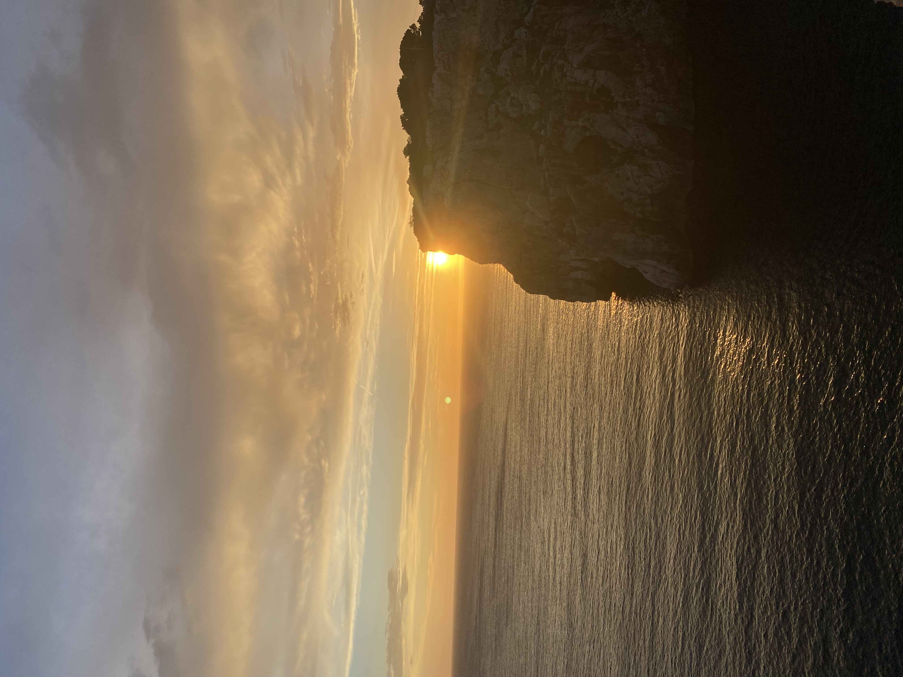
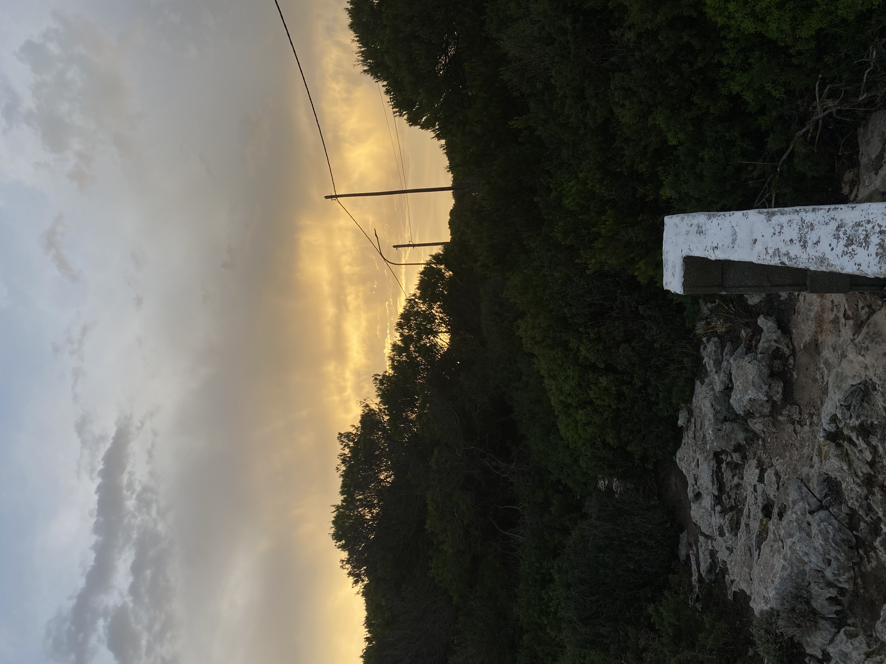
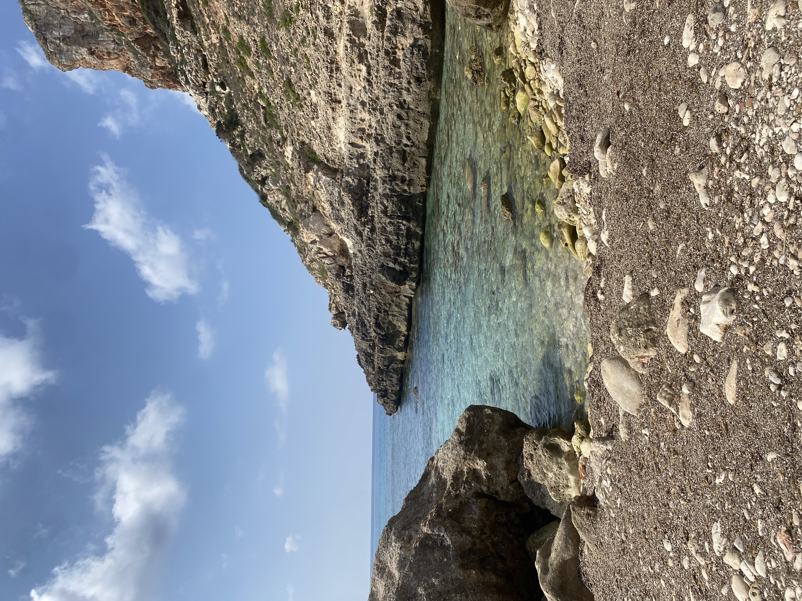
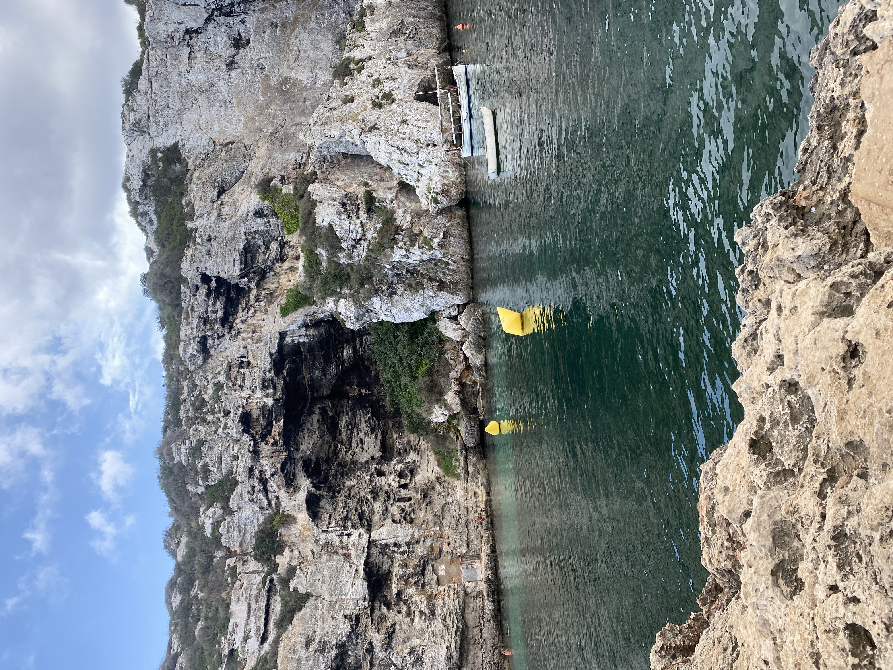
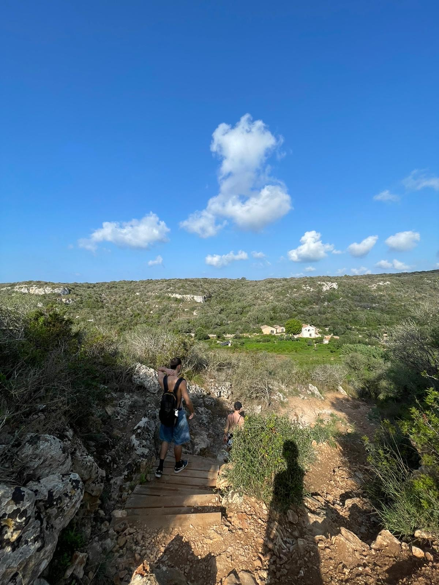

Viatge a Menorca - 2024
Introducció
Aquest viatge és el meu darrer viatge, però un dels que més me'n recordaré per sempre, ja que ho vaig fer amb els meus dos millors amics, i crec que és una cosa que és difícil que es repeteixi. Vam anar a Menorca 3 dies exactes, ho vam organitzar tot nosaltres, i, curiosament, el viatge va sortir perfecte (excepte pel temps).
Primer Dia: Arribada a Menorca
El primer dia va ser força cansat, ja que teníem el vol a les 6 AM, i vam arribar allà a les 7AM aproximadament. És clar, vam arribar a l'aeroport, però no teníem cotxe ni carnet per llogar-ne un, així que vam anar amb bus destí Maó. Un cop a Maó vam estar un temps per allà, vam comprar el dinar del viatge sencer, i malauradament el temps es va posar lleig, així que vam agafar un altre bus cap al poble on hi havia el nostre AIRBNB, un apartament que va ser perfecte, amb piscina i força barat.
Anècdota del dia
A causa del cansament i que un lloc nou no coneixes les coses, vam estar donant voltes durant 30 minuts per un carrer buscant el nostre AIRBNB, i, sorpresa, estava just davant del carrer que estàvem envoltant incessantment.
Segon Dia: Senderisme
El segon dia va ser el millor, ja que aquella nit vam descansar, no vam sortir a cap costat (basicament perquè no sabíem on), així que vam dormir i ens vam preparar per a aquest dia, el qual va ser caminar i caminar i caminar per un camí que envolta tota l'illa per anar a les cales que volíem veure, amb tot el que vam aprofitar, però bé, som joves el dia caminant pel camí veient les diferents cales, i cal dir, que han estat les millors cales on he estat.
Anècdota del dia
No se si es considera anecdota, però aquesta nit si que ens apetecia sortir, però descobrim que no hi habia ni Uber ni Cabify, i que al poble en el qual ens allotjavem no hi habia cap discoteca, així que vam haver de agafar un Taxi fins a Ciutadella. Per a posar en context, el poble en el qual ens allotjavem estava en l'altra punta de l'illa... Encara sort que el preu va ser entre 3...
Tercer Dia: Vaixell
Aquest dia va sortir una mica malament, ja que la nostra idea era llogar un vaixell i estar-hi tota la tarda. Ho teníem reservat des de fa mesos, però just aquell dia el destí es va posar capritxós i feia mal temps... El propietari del vaixell ens va escriure i ens va dir que per polítiques no podíem sortir, així que ens vam quedar sense vaixell i vam haver de tornar a caminar i caminar... però en sentit contrari per no repetir el dia anterior.
Anècdota del dia
Ens vam trobar un poble i vam decidir turistejar una mica. Per a la nostra sorpresa, vam anar a un bar que tenia piscina! però no una piscina inflable ni res, una piscina digna d'hotel, per fer-se uns llargs i tot. Sota la nostra sorpresa, preguntem si valien diners extra alguna cosa, però no, només amb una consumició podies fer servir la piscina, cosa que tant de bo trobar per aquí a Barcelona o la costa brava...
Conclusions del viatge
Per acabar aquest viatge, dir que hauria estat millor si algun de nosaltres hagués tingut carnet, ja que no vam poder veure gaire de l’illa, ens vam estar movent pel camí traçat i amb taxis, que no eren gaire barats... Però l’important del viatge és gaudir, i jo no puc fer altra cosa quan viatjo: simplement és el millor que m’ha passat, viatjar amb els meus amics a un lloc nou, nosaltres sols...
